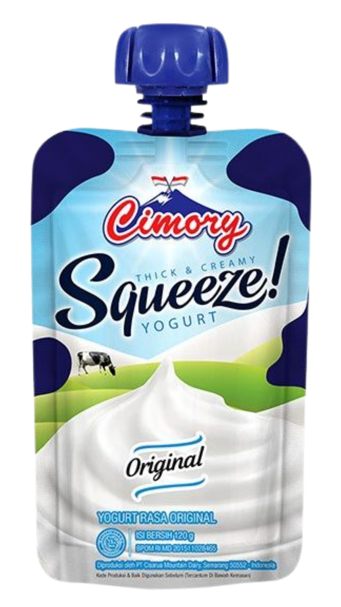
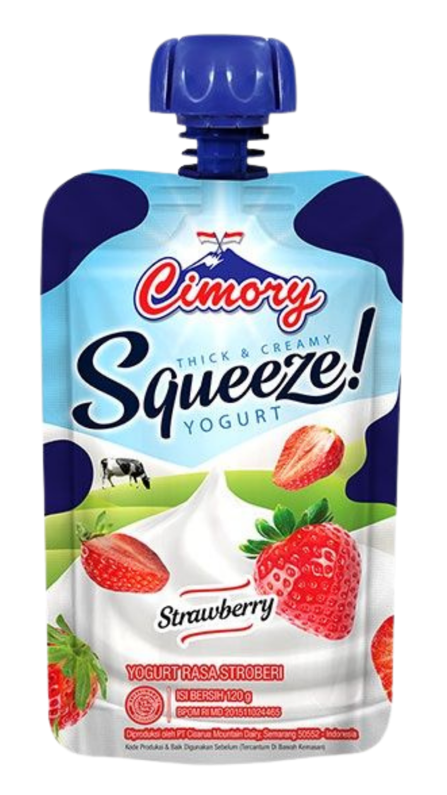
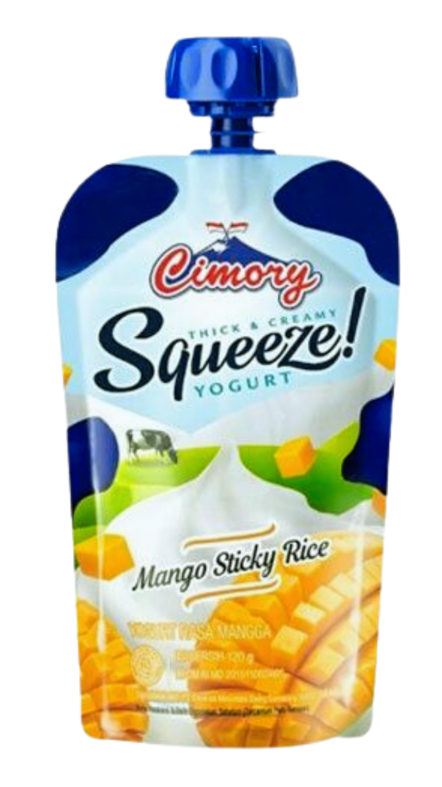
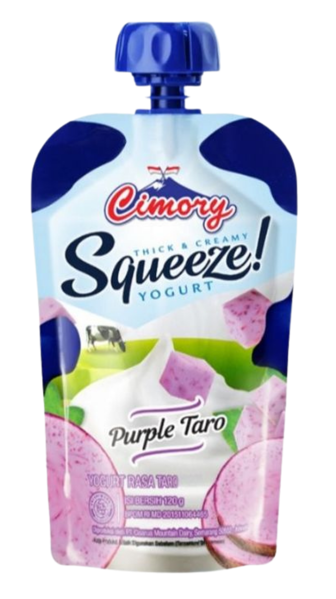
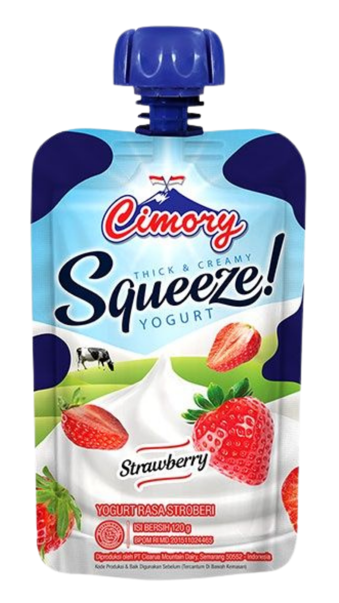
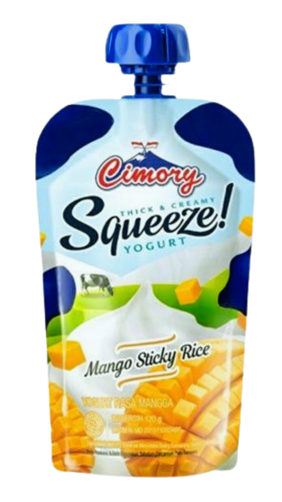
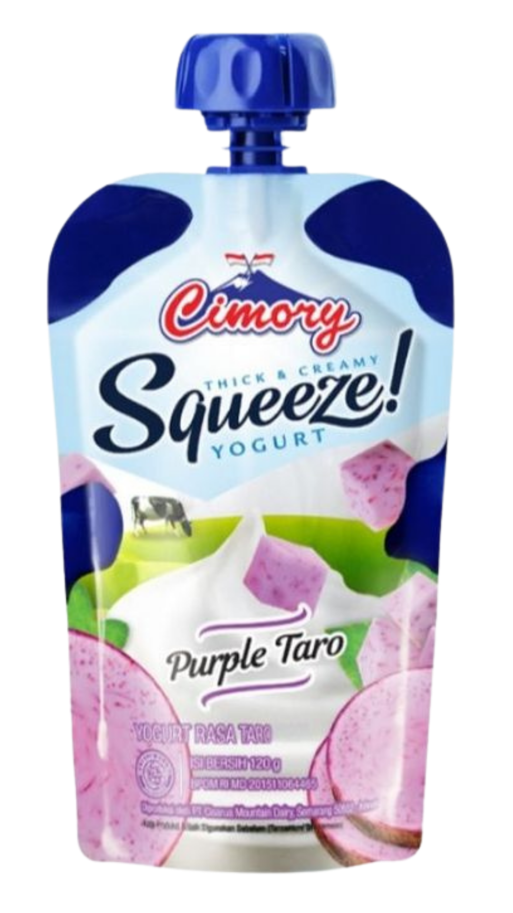

Cimory Yogurt Squeeze
~ Original
Kesegaran murni dalam setiap genggaman. Rasakan kebaikan yogurt Cimory yang otentik dan tak tertandingi.
Komposisi:
Terbuat dari Susu Sapi Segar, Kultur Bakteri Hidup (Lactobacillus bulgaricus, Streptococcus thermophilus), Gula.
 




